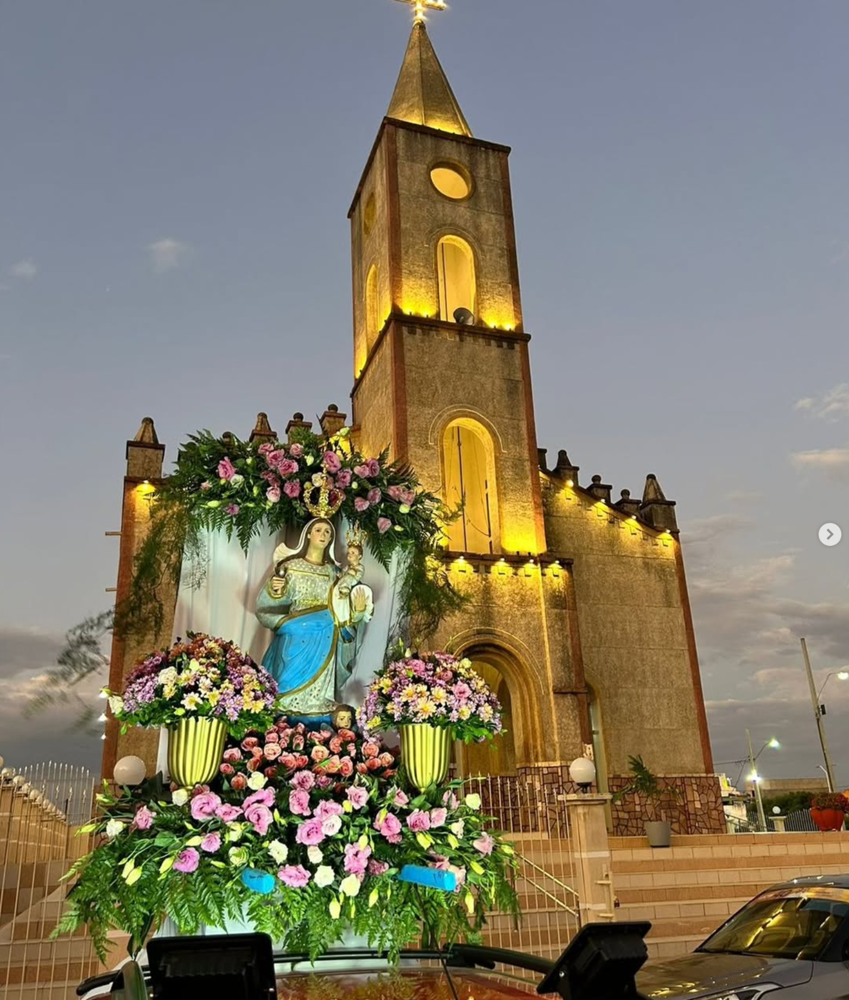
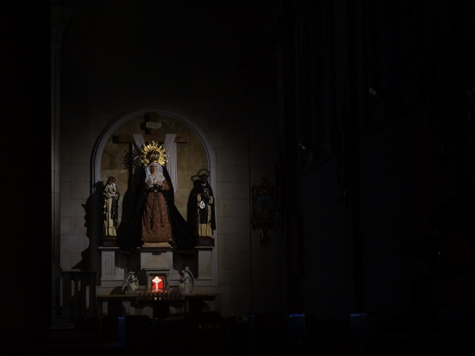
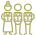
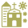
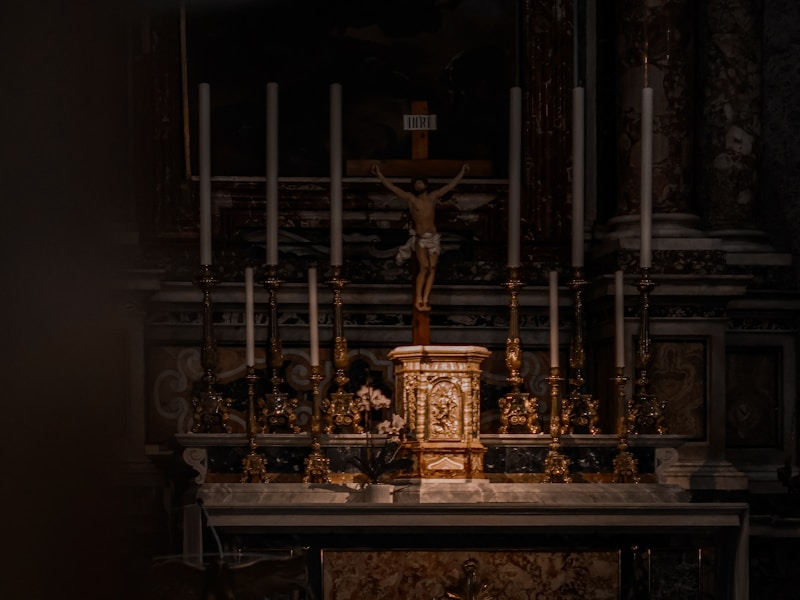

Uma comunidade de fé com mais de 66 anos de história, erguida em torno da devoção à Nossa Senhora dos Remédios, padroeira de Jericó, no sertão da Paraíba.

A Paróquia Nossa Senhora dos Remédios de Jericó nasceu por volta de 1870, quando Alexandre Matias de Melo doou um terreno para a construção de uma igreja em honra à Nossa Senhora dos Remédios. Ao redor dela formou-se o povoado que viria a se tornar a cidade de Jericó.
Pertencemos à Diocese de Cajazeiras — erigida em 1914 pelo Papa Pio X — e integramos a Forania de Catolé do Rocha. Somos uma comunidade acolhedora, unida pela fé, pela oração e pelo serviço ao próximo no coração do sertão paraibano.
A paróquia foi fundada por volta de 1870, quando Alexandre Matias de Melo doou o terreno para a primeira igreja.
A Diocese de Cajazeiras conta com 61 paróquias distribuídas em 6 foranias pelo sertão paraibano.
A Forania de Catolé do Rocha, da qual fazemos parte, engloba 8 municípios da região.
A Diocese de Cajazeiras possui aproximadamente 95% de católicos em seu território de 14.867 km².
A Paróquia Nossa Senhora dos Remédios de Jericó-PB tem como missão central evangelizar, celebrar os sacramentos com fervor e promover a caridade cristã. Pertencemos à Diocese de Cajazeiras e nos comprometemos a ser presença viva de Cristo no sertão paraibano, acolhendo a todos com amor fraterno.


Acompanhamento espiritual e fraterno nos momentos de luto, dificuldade ou busca de sentido. Converse com nosso padre ou participe dos grupos de apoio.
Celebrações especiais ao longo do ano: festa da padroeira (8 de setembro), Semana Santa, Natal, Corpus Christi e demais solenidades litúrgicas.
Acompanhe as missas e eventos da paróquia pelas nossas redes sociais. Levamos a fé até você, onde quer que esteja.

O padre está disponível para visitas, unção dos enfermos, aconselhamento espiritual e celebração dos sacramentos em sua casa ou hospital.

Nossa Senhora dos Remédios é a mãe e protetora de Jericó. Desde os primórdios da cidade, sua devoção une o povo jericoense em torno da fé, da esperança e do amor fraterno. A ela recorremos nos momentos de alegria e de dificuldade, certos de sua intercessão junto ao Senhor.

08 Set, 2025 - 6:00 - 21:00
Paróquia Nossa Senhora dos Remédios, Praça Pe. Sebastião, Jericó - PB
Sua contribuição nos ajuda a manter os Pastoral pastorais, conservar o templo e expandir as ações sociais e evangelizadoras da paróquia em Jericó e região.